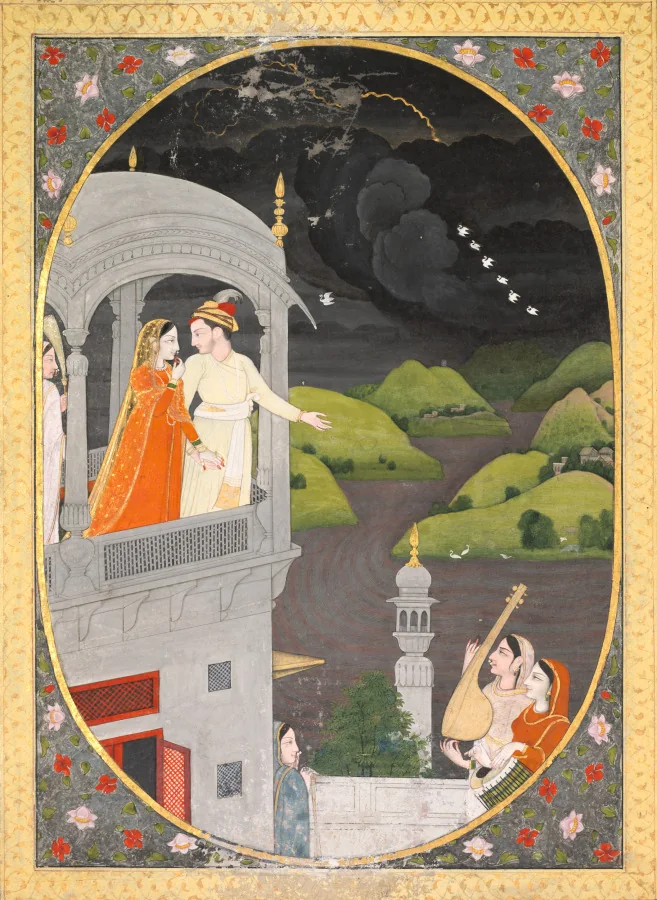
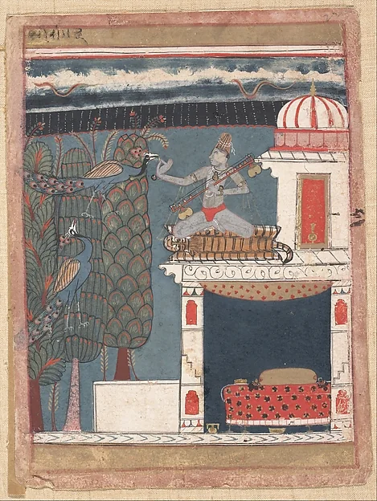
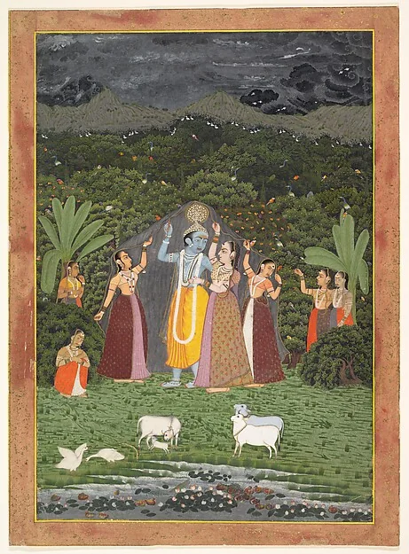
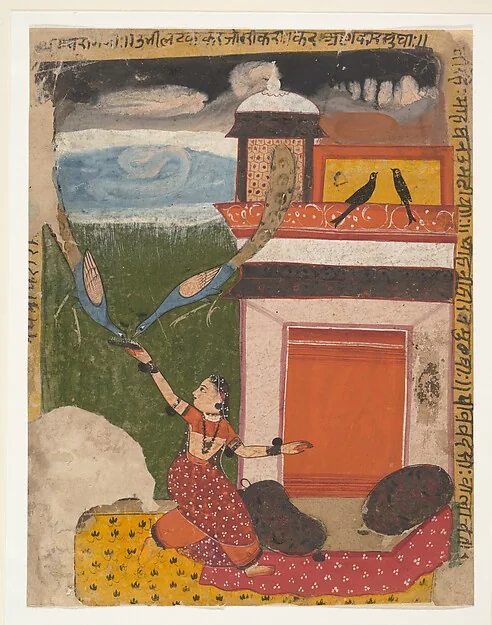
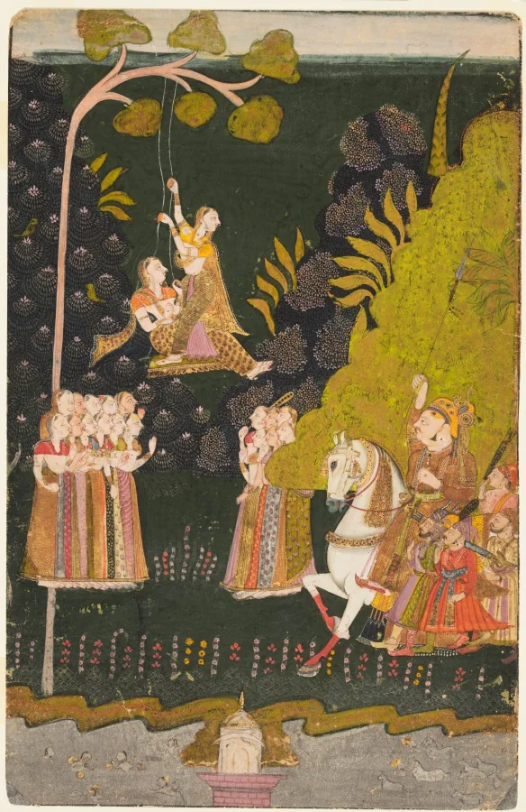

After Kalidasa's Meghaduta, c. 5th century
मेघदूत
The Cloud Messenger
“Even happy hearts thrill strangely to the cloud.”
Prologue · रामगिरि · Rama's peak
On Rama's shady peak where hermits roam,
Former Cloud, I
Mid streams by Sita's bathing sanctified,
An erring Yaksha made his hapless home,
Doomed by his master humbly to abide,
And spend a long, long year of absence from his bride.
An attendant of the god of wealth is exiled for a year, to a hill in the middle of India. His young wife is half a subcontinent away, in a city on the slopes of Kailasa. Eight months pass. Then, at the edge of summer, a dark shape comes over the ridge.
Some months were gone; the lonely lover's pain
Former Cloud, II
Had loosed his golden bracelet day by day
Ere he beheld the harbinger of rain,
A cloud that charged the peak in mimic fray,
As an elephant attacks a bank of earth in play.
He offers it fresh blossoms, and asks it to carry a message north. You are that cloud.
I
बूँदाबाँदी
boonda-baandi · the first scattered drops
Nor did it pass the lovelorn Yaksha's mind
Former Cloud, V
How all unfitly might his message mate
With a cloud, mere fire and water, smoke and wind—
Ne'er yet was lover could discriminate
'Twixt life and lifeless things, in his love-blinded state.
II
फुहार
phuhaar · a fine spray you walk through
Learn first, O cloud, the road that thou must go,
Former Cloud, XIII
Then hear my message ere thou speed away;
Before thee mountains rise and rivers flow:
When thou art weary, on the mountains stay,
And when exhausted, drink the rivers' driven spray.
The route the exile gives is real: north-west to the Narmada, to Ujjain, then north across the plains to the Ganga and the Himalaya. It is also, near enough, the path the monsoon takes every year. The rains reach Kerala around the first of June and cover the whole country by the eighth of July.
While favouring breezes waft thee gently forth,
Former Cloud, IX
And while upon thy left the plover sings
His proud, sweet song, the cranes who know thy worth
Will meet thee in the sky on joyful wings.
Map: the poem's route in gold. Dashed lines: approximate normal monsoon onset dates, after the India Meteorological Department (2020 normals).
III
रिमझिम
rimjhim · steady rain with a rhythm in it
Then fly, rain-quickened, to the Reva river
Former Cloud, XIX
Which gaily breaks on Vindhya's rocky side,
Like painted streaks upon an elephant's dingy hide.
Spying the madder on the banks, half brown,
Former Cloud, XXI
Half green with shoots that struggle to the birth,
Nibbling where early plantain-buds hang down,
Scenting the sweet, sweet smell of forest earth,
The deer will trace thy misty track that ends the dearth.
Yet I foresee delay on every hill
Former Cloud, XXII
Where jasmines blow, and where the peacock-train
Cries forth with joyful tears a welcome shrill.
IV
बौछार
bauchhaar · rain the wind throws sideways
Ujjain, at dusk
Clothing thyself in twilight's rose-red glory,
Former Cloud, XXXVI
Embrace the dancing Shiva's tree-like arm;
He will prefer thee to his mantle gory.
Where women steal to rendezvous by night
Former Cloud, XXXVII
Through darkness that a needle might divide,
Show them the road with lightning-flashes bright
As golden streaks upon the touchstone's side—
But rain and thunder not, lest they be terrified.
Press and hold anywhere to thunder.
Interlude
The rain in paint
For three hundred years, Indian painters gave the monsoon its own vocabulary: skies of ink instead of blue, lightning drawn as a gold snake, a row of white cranes across the dark, peacocks crying on the rooftops. These are the real thing.





V
झड़ी
jhadi · rain that will not stop
Fly then where Ganges o'er the king of mountains
Former Cloud, L
Falls like a flight of stairs from heaven let down
For the sons of men; she hurls her billowy fountains
Like hands to grasp the moon on Shiva's crown
And laughs her foamy laugh at Gauri's jealous frown.
If thou, like some great elephant of the sky,
Former Cloud, LI
Shouldst wish from heaven's eminence to bend
And taste the crystal stream, her beauties high—
As thy dark shadows with her whiteness blend—
Would be what Jumna's waters at Prayaga lend.
VI
मूसलाधार
mooslaadhaar · rain in streams as thick as a pestle
If, born from friction of the deodars,
Former Cloud, LIII
A scudding fire should prove the mountain's bane,
Singeing the tails of yaks with fiery stars,
Quench thou the flame with countless streams of rain—
The great have power that they may soothe distress and pain.
The breeze is piping on the bamboo-tree;
Former Cloud, LVI
And choirs of heaven sing in union sweet
O'er demon foe of Shiva's victory;
If thunders in the caverns drumlike beat,
Then surely Shiva's symphony will be complete.
बादल फटना
VII
खुल गया
khul gaya · it has cleared
Then, in familiar Alaka find rest,
Former Cloud, LXIII
Down whom the Ganges' silken river swirls,
Whose towers cling to her mountain lover's breast,
While clouds adorn her face like glossy curls
And streams of rain like strings of close-inwoven pearls.
She is at the window, counting the days left with flowers laid on the sill. The cloud settles against the glass and does what it came to do.
So she will know the cloud is a true messenger, he gives it a secret only the two of them could know:
And one thing more: thou layest once asleep,
Latter Cloud, XLVIII
Clasping my neck, then wakening with a scream;
And when I wondered why, thou couldst but weep
A while, and then a smile began to beam:
“Rogue! Rogue! I saw thee with another girl in dream.”
When Vishnu rises from his serpent bed
Latter Cloud, XLVII
The curse is ended; close thine eyelids tight
And wait till only four months more are sped;
Then we shall taste each long-desired delight
Through nights that the full autumn moon illumines bright.
…then wander free
Latter Cloud, LII
In rainy loveliness, and ne'er abide
One moment's separation from thy lightning bride.
Send this cloud
Somebody is far away from somebody, every monsoon. Send them a cloud. Your message travels inside the link and nowhere else.